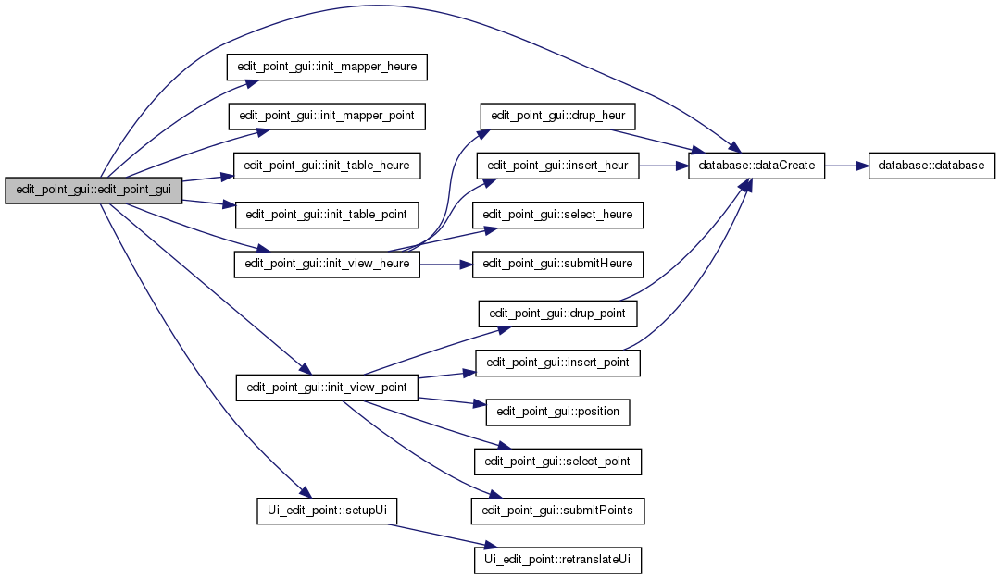

Cartographie de lieux
0.1
Page principale
Classes
Fichiers
edit_point_gui
courantheur
courantpoint
delete_mapper_heure
delete_mapper_point
delete_table_heure
delete_table_point
drup_heur
drup_point
edit_point_gui
init_mapper_heure
init_mapper_point
init_table_heure
init_table_point
init_view_heure
init_view_point
insert_heur
insert_point
mapperheures
mapperpoints
modelheures
modelpoints
on_categorie_point_but_clicked
on_debut_heur_editingFinished
on_fin_heur_editingFinished
position
Posx
Posy
select_heure
select_point
selectionModel
submitHeure
submitPoints
~edit_point_gui
edit_point_gui::edit_point_gui
(
float
PosxA
,
float
PosyA
,
int
point_id
=
0
,
QWidget *
parent
=
0
)
contructeur de la classe
edit_point_gui
Paramètres:
point_id
: int parametre optionnel, designe le point courant dès l'affichage de la fenetre.
courantpoint
: int [attirbut prive] : point selectionne
Définition à la ligne
245
du fichier
edit_point_gui.cpp
.
Voici le graphe d'appel pour cette fonction :

Tout
Classes
Fichiers
Fonctions
Variables
Généré le Sun Mar 25 2012 00:40:36 pour Cartographie de lieux par
1.7.4
 1.7.4
1.7.4